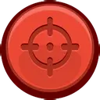
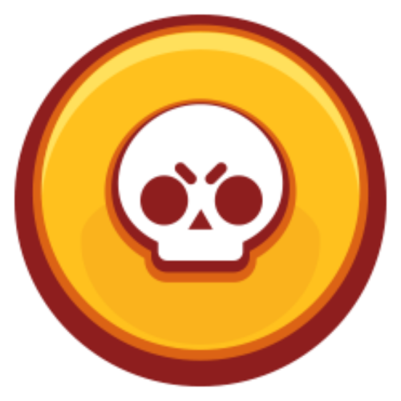

Bien, para entender las mecanicas como volverse mejor jugador en este juego, lo primero que es importante saber es conocer muy bien a los brawlers que hay actualmente en el juego, tanto como sus basicos y tambien sus supers.
 Brawl Stars es un videojuego multijugador para móviles disponible en Android y iOS, por Supercell y lanzado globalmente en 2018. La versión beta del juego fue lanzada el 14 de junio de 2017 solo para Canadá, Australia y Nueva Zelanda con temáticas simples y mecánicas difíciles, mientras que la versión global se lanzó agregando un mejor visual con mayor detalles interesantes y diferentes funcionalidades, que se agregaron el 12 de diciembre de 2018. Actualmente lleva 6 años de existencia en el mundo de los videojuegos móviles.